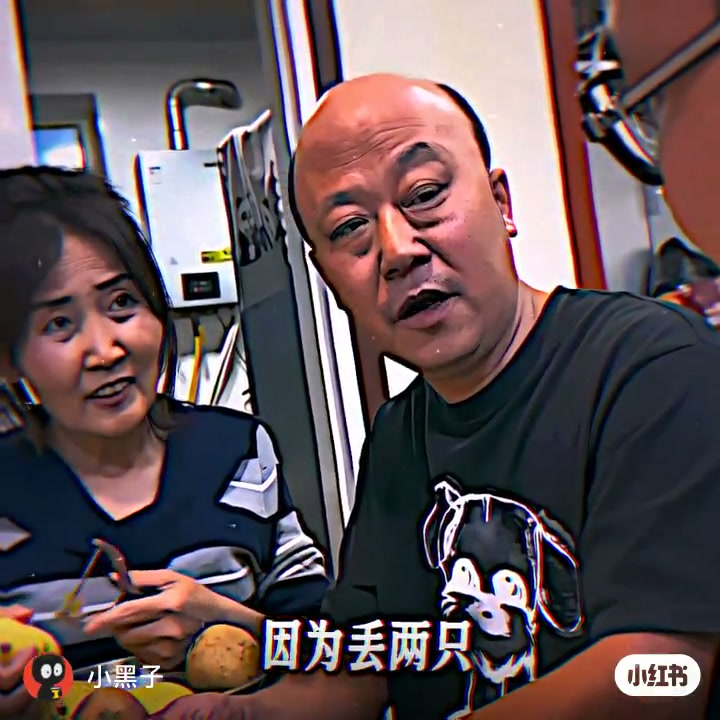
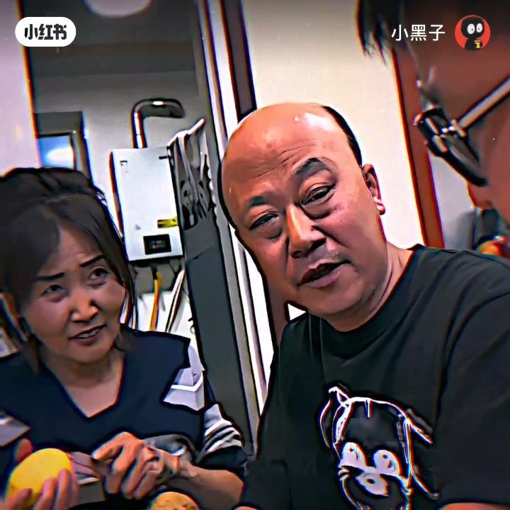
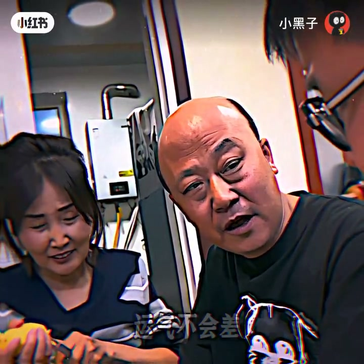

内容要点
「小黑子」25 秒厨房闲聊体短片：用一连串「为什么……因为……」揭示观察里的选择偏差——袜子总丢一只、老歌好听、大人不挑食、没有完美反杀、红颜薄命、爱笑运气好——笑点在于「反过来的样本根本进不了你的视野」。画面为家居厨房削土豆闲聊，黄字大字幕跟读。
知识结构
[00:00→00:06]
丢失与老歌
袜子总丢一只因丢两只发现不了；老歌好听因不好听的传不下来。
[00:06→00:14]
挑食与反杀
大人不挑食因不会买不爱吃的菜；完美反杀不会被发现。
[00:14→00:22]
红颜与爱笑
丑的无人记；运气差的人笑不出来——都是样本筛选。
总结
你以为的「规律」，经常只是筛选后的幸存者故事：反过来的样本根本没机会出现在你眼前。
00:00-00:25六条「为什么」背后的同一种筛选
画面：厨房水热器前，光头男主与女伴削土豆闲聊，黄字字幕同步甩梗。袜子总丢一只——因为丢两只你就发现不了；老歌好听——不好听的根本流传不下来；小孩爱挑食大人不挑——大人根本不会买自己不喜欢的菜。
为什么没有完美反杀——完美的根本不会被发现；「自古红颜多薄命」——丑的早死晚死没人在意（口播/字幕偏戏谑）；爱笑的人运气不会差——运气差的也笑不出来。标题「突然就醒悟了」点明：笑完之后是同一套观察偏差。（个别用词 ASR 有误，以字幕为准）

[00:02] 厨房闲聊：黄字字幕讲袜子总丢一只的偏差
Kitchen chat: yellow subs on the bias of always losing one sock

[00:10] 削土豆对话：大人不挑食因不买不爱吃的菜
Peeling potatoes: adults aren’t picky because they don’t buy what they dislike

[00:20] 收尾梗：爱笑运气好——运气差的笑不出来
Closing gag: smile and luck follows—the unlucky can’t smile
完整转录（12段）
以下文本由 Whisper medium 模型自动转录，可能存在少量识别误差，已尽可能修正。
为什么挖了总是丢一只
因为丢两只你就发现不了
为什么老和你现在这个好听
因为不好听那个根本就流传不下来
为啥小孩爱挑食大人不爱挑食
因为大人根本就不会买自己不喜欢吃的菜
为什么没有完美反追
因为完美反追根本就不会被发现
为什么自古红颜多保命
因为丑的早死晚死没人善意
还有为什么说爱笑的运气不会差
运气差的他也他们笑不出来呀